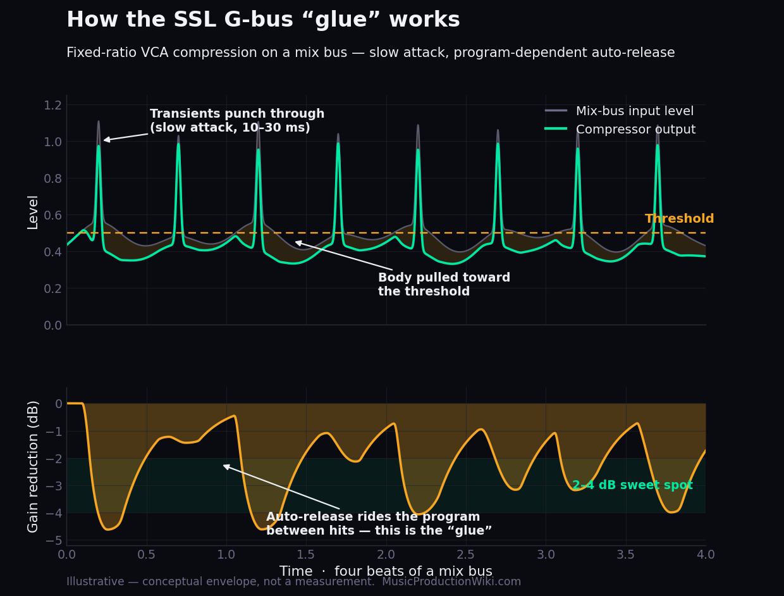
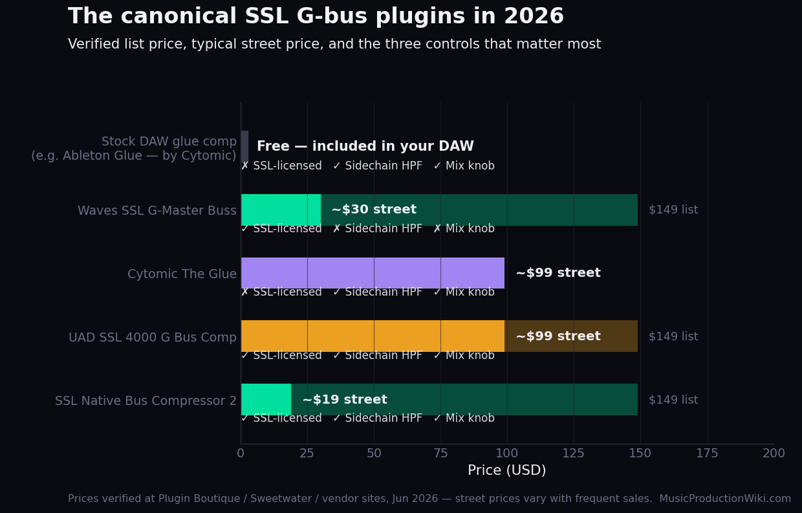
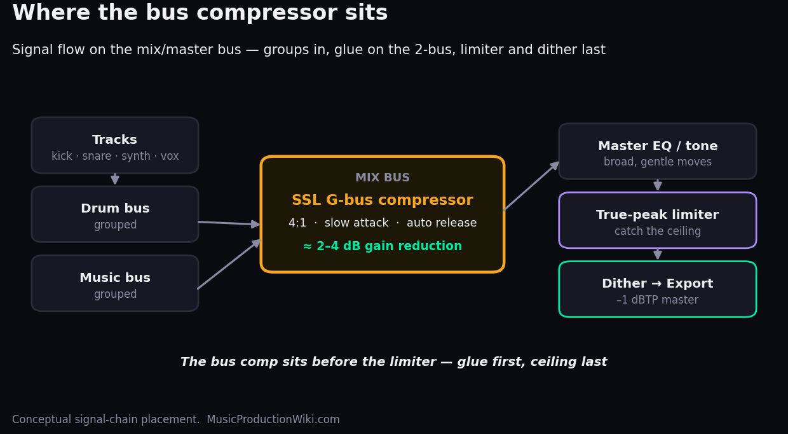

There is no single product called “the SSL G-Bus Compressor.” There is a circuit — the centre-section bus compressor built into Solid State Logic’s 4000 G-Series mixing console in the late 1980s — and there are half a dozen plugins that model it. That circuit is the most copied dynamics processor in the history of recorded music, because it does one thing almost no other compressor does as gracefully: it makes a finished mix bus sound like a record rather than a stack of tracks. Engineers call that effect “glue.” This review explains what the glue actually is, judges the five ways you can buy it in 2026, and tells you which one to put on your master bus tonight.
- ✅ Program-dependent auto-release glues a mix together better than any other circuit at the price
- ✅ Fixed ratios and a tiny control set make it almost impossible to get a bad result
- ✅ Modern plugin versions add a sidechain HPF and dry/wet Mix the original lacked
- ✅ Best versions cost under $100, and SSL’s own routinely sells for ~$19
- ✅ Works on drum buses, synth groups and the master — not just the 2-bus
- ❌ Easy to overuse — past ~4 dB of gain reduction it pumps and dulls
- ❌ The flavour differences between versions are small and easy to overpay for
- ❌ It glues; it will not fix a mix that isn’t balanced underneath it
Best for: Anyone who wants their mix bus to feel cohesive and “produced” with one plugin and four controls — the single highest-impact processor most home mixes are missing.
Not for: Engineers chasing surgical, transparent dynamics control — that is a job for a clean VCA or a mastering compressor, not a character box built to add cohesion.
What “The SSL G-Bus” Actually Is
The hardware is the stereo compressor in the centre section of the SSL 4000 G-Series console — the master fader strip every channel summed into. It is a feedback-design VCA compressor with a deliberately small control set: three fixed ratios (2:1, 4:1 and 10:1), six switched attack times (from 0.1 up to 30 ms), four switched release times plus an Auto mode, and a threshold knob. That is the whole instrument. There is no “sound” control, no character switch, no saturation stage you dial in. Its reputation rests entirely on how that simple circuit behaves under a full mix.
Because it is a feedback design — the detector reads the signal after gain reduction, not before — the compression is gentle and program-dependent rather than clinical. It eases into gain reduction and eases out of it in a way that tracks the music. Paired with the Auto release, which lengthens and shortens the recovery according to what the program is doing, you get a compressor that breathes with a mix instead of clamping it. That behaviour is the entire product. Everything below is just five companies’ attempt to reproduce it in software.
Some history explains why this particular box, and not the hundred other compressors of its era, became the default. SSL’s 4000-series consoles were the workhorses of commercial studios from the early 1980s, and the 4000 E arrived first with a bus compressor built into the centre section — the master module every channel was summed through. Engineers reaching for it on the stereo bus found that the circuit which tamed peaks also made the whole mix cohere, and the slightly revised G-series revision that followed late in the decade became the one everyone copied. Because it sat on the master bus of so many rooms, it ended up on an enormous share of the records a generation grew up on — which is the real reason “the SSL sound” became shorthand for “a finished record.”
One technical detail is worth understanding because it explains the character. The SSL is a feedback compressor: its level detector reads the output, after gain reduction, rather than the input. Most modern compressors are feedforward — they read the input and react almost instantly. A feedback design cannot respond as fast or as precisely, and that “imperfection” is the entire point. The gentler, slightly laggy, program-dependent response is what rounds the compression off so you hear cohesion rather than clamping. When people say a plugin nails the SSL “vibe,” this behaviour is most of what they mean — and it is why the cheaper, more surgical feedforward compressors in your DAW glue differently even at identical settings.
What “Glue” Really Means
“Glue” gets used as a vibe word, but it describes something specific and measurable. When a mix hits the bus compressor, the loudest sustained energy — the body of the kick, the wall of a chorus — pushes the signal over the threshold and the VCA pulls it down. Because the attack is relatively slow (the classic setting is 10–30 ms), the sharp transient tips — stick hits, pluck attacks — slip past before the compressor reacts. So the peaks keep their punch while the sustained body is gently pressed toward the threshold. The quiet bits between hits get nudged up relative to the loud bits. Everything moves a little closer together in level, locked to one shared gain-reduction envelope — and a shared envelope is what makes separate tracks read as one performance. That cohesion is the glue.

Illustrative — the envelope above is a conceptual model of the circuit’s behaviour, not a measurement of any specific plugin. It shows the two mechanisms that create glue: a slow attack that lets transients through, and a program-dependent auto-release that keeps gain reduction in the musical 2–4 dB range.
The numbers that matter are small. The sweet spot for glue is roughly 2–4 dB of gain reduction on the loudest sections, at a 4:1 ratio, with a slow attack and Auto release. Below about 2 dB you barely hear it; push past 4–5 dB and the breathing becomes pumping, transients dull, and the mix sounds smaller, not bigger. The whole skill of bus compression is staying in that narrow band — which, conveniently, is exactly what the original circuit’s tiny control set nudges you toward. For the deeper theory, our bus compression guide walks through every control; here we are judging the plugins.
Two clarifications save most beginners months of frustration. First, glue is not loudness. The bus compressor makes a mix feel cohesive and controlled; it does not make it competitively loud — that is the limiter’s job, further down the chain. If you are reaching for the bus compressor to get loud, you will overuse it and dull everything. Second, the three fixed ratios are tools for different jobs: 2:1 is the most transparent and the safest on a delicate master; 4:1 is the classic all-rounder most engineers live on; and 10:1 is aggressive, reserved for a drum bus or a deliberate effect rather than the full mix. Reach for a higher ratio before you reach for more gain reduction — a firmer ratio held shallow almost always sounds better than a soft ratio crushed hard.
The Five Ways to Buy It in 2026
Every plugin below models the same console circuit, so the headline sound is more alike than any marketing copy admits. What separates them is officialness, the extra controls each adds beyond the hardware (a dry/wet Mix knob and a sidechain high-pass filter are the two worth paying for), CPU cost, and price. We have not null-tested these against a real 4000 G console; the distinctions below are drawn from each vendor’s documentation and the consensus of engineers who have. Prices were verified at Plugin Boutique, Sweetwater and the vendor sites on June 15, 2026.

| Version | Price (verified) | What sets it apart |
|---|---|---|
| SSL Native Bus Compressor 2 | $149 / ~$19 | SSL’s own circuit. Adds a dry/wet Mix knob, a sidechain high-pass, extended attack/release/ratio and oversampling the hardware never had. The default pick. iLok. |
| UAD SSL 4000 G Bus Compressor | $149 / ~$99 | SSL-endorsed end-to-end circuit model. Sidechain filter, Mix and Headroom controls, the hardware’s Fade taper up to 60 s, artist presets. Now runs natively (UADx) with no Apollo required. |
| Cytomic The Glue | $99 | A clean-room model of an E/G hybrid (not SSL-licensed). Adds a Range knob that caps maximum gain reduction, a Mix knob, sidechain HPF, attack down to 0.01 ms and oversampling. Famously light on CPU. |
| Waves SSL G-Master Buss | ~$30 | The oldest and most faithful officially-licensed model — vintage feedback design, autofade, external sidechain. No internal Mix or HPF, so you route those yourself. Perpetually on sale. |
| Your DAW’s stock bus comp | Free | Most DAWs ship an SSL-style glue compressor. Ableton’s Glue Compressor is literally built by Cytomic — same lineage as The Glue. Free, and good enough that the upgrade is about flavour, not necessity. |
SSL Native Bus Compressor 2 — the default pick
If anyone should know what the circuit sounds like, it is SSL, and the Native Bus Compressor 2 is their own software version. Crucially it does not just copy the hardware — it fixes the two things in-the-box mixers always wished the original had. The sidechain high-pass filter stops kick and bass energy from triggering the whole compressor, which kills the low-end pumping that ruins so many home bus-compression attempts. The dry/wet Mix knob gives you parallel compression in one control: blend the squashed signal back against the dry to keep transients alive. Add oversampling and extended attack/release ranges and you have the most capable version of the circuit, from the company that owns it. At a $149 list that regularly drops to about $19 on sale, it is also one of the best-value plugins in any category.
UAD SSL 4000 G Bus Compressor — if you live in the UA ecosystem
Universal Audio’s version is an SSL-endorsed, end-to-end circuit emulation, and the headline news for 2026 is that it now runs natively (as a UADx plugin) with no Apollo interface or UAD hardware required. It carries the same modern additions — sidechain filtering, a Mix knob, a Headroom control — plus the hardware’s signature Fade taper of up to 60 seconds for mix-bus automation. It is the pick if you are already invested in UAD and want everything to match, but at a $149 list (frequently ~$99) it costs more than SSL’s own for a sound that is, honestly, a hair’s difference.
Cytomic The Glue — the connoisseur’s choice
The Glue is the one plugin here that engineers reach for by name rather than by brand loyalty. It is a clean-room model (Cytomic built it from circuit schematics, which is why it carries the descriptive name “The Glue” rather than “SSL”) of an E/G hybrid, and its party trick is the Range knob, which caps how much gain reduction the compressor can apply — a beautifully musical way to keep yourself in the 2–4 dB zone without watching the meter. It also offers an attack as fast as 0.01 ms, a Mix knob, a sidechain HPF and oversampling, and it is famously efficient on CPU. If you already own it, you have no reason to switch. One detail worth knowing: Ableton’s stock Glue Compressor was developed by Cytomic, so Live users have a slice of this lineage for free.
Waves SSL G-Master Buss — the faithful original
Waves’ was the SSL bus compressor for a generation of in-the-box mixers, and it remains the most faithful officially-licensed model — it reproduces the vintage feedback-based behaviour and its analogue quirks closely. The trade-off is that it is faithful to a fault: there is no built-in Mix knob and no sidechain high-pass, so parallel blending and de-pumping mean routing them yourself. Given that it sells for around $30 on Waves’ permanent sale carousel, it is still a genuine bargain — just a more old-school workflow than SSL’s own.
Your DAW’s stock compressor — start here
Before you spend anything: most DAWs already ship an SSL-style glue compressor. Ableton’s Glue Compressor (Cytomic-built), Logic’s Compressor in its Studio VCA mode, and the stock dynamics in Cubase and FL Studio will all get you 90% of the way. The honest truth is that a paid SSL bus compressor is a flavour and convenience upgrade, not a capability you are missing. If your mixes don’t yet sound glued, the problem is almost never the plugin — it is the settings.
Where It Sits and How to Set It
The bus compressor goes last on the mix bus, before the master limiter — you glue the mix together, then catch the ceiling. (For why the limiter goes after and how to set its ceiling, see mixing headroom explained.) Many engineers run a gentle version across the whole 2-bus and a more aggressive one across the drum bus or synth group; the circuit is just as happy gluing a subgroup as the master.
One workflow note worth internalising: on the drum bus you can push harder than on the master — 4–6 dB of gain reduction with a slightly faster attack tightens a kit and adds snap, because a subgroup is far less exposed than the full mix. The same circuit that wants a feather-light touch on the 2-bus will happily do real work on a group.

| Control | Starting point | Why |
|---|---|---|
| Ratio | 4:1 | The classic glue ratio — firm enough to cohere, gentle enough not to crush. |
| Attack | 10–30 ms | Slow enough to let transients punch through before gain reduction engages. |
| Release | Auto | Lets the circuit ride the program — the source of the “breathing” glue. |
| Threshold | 2–4 dB GR | Lower until the meter shows 2–4 dB on the loudest parts, then stop. |
| Sidechain HPF | ~80–120 Hz | Stops kick/bass from triggering the whole comp — kills low-end pumping. |
| Mix | 70–100% wet | Back off from 100% to keep transients alive (parallel-style glue). |
If your version lacks a sidechain HPF or Mix knob (the Waves model, the older stock comps), that is the single best reason to upgrade to SSL’s own — those two controls fix the most common bus-compression mistakes by design.
The Mistakes That Kill Bus Compression
Almost every bad bus-compression result traces to one of five errors — and none of them is about which plugin you bought.
1. Too much gain reduction. Past about 4–5 dB the circuit stops gluing and starts pumping: the mix audibly ducks and recovers, transients flatten, and the whole thing sounds smaller. If you want more density, raise the ratio or add a second gentle stage — do not just keep lowering the threshold.
2. An attack that is too fast. A fast attack clamps the transients that give a mix its punch. The glue depends on a slow attack of 10–30 ms that lets stick hits and pluck attacks through before gain reduction engages. Speed it up and a lively mix goes flat.
3. No sidechain high-pass on a bass-heavy mix. Kick and bass carry most of the energy, so without a sidechain high-pass filter they trigger the compressor on every beat and pump the entire mix. Engaging the HPF around 80–120 Hz is the single most common fix — and the best reason to choose a version that has one.
4. Adding it last, after the mix is finished. A bus compressor changes the balance it is fed, so bolting one on at the end means you mixed into a different target than the one you now hear. Insert it early and gentle and mix into it, or commit to a genuinely light setting at the end — but do not mix a record dry and then squash several dB across it.
5. Using it to fix a balance problem. Glue makes a good balance cohere; it cannot rescue a mix where the vocal is buried or the low end is wrong. If the bus compressor is making things worse, the problem is almost always underneath it. Fix the mix first, then glue it.
Which One Should You Buy?
For almost everyone: the SSL Native Bus Compressor 2. It is the official circuit, it has the two modern controls that matter, and on sale it is cheaper than lunch. Buy a rival only for a specific reason: Cytomic The Glue if you want the Range knob and the lightest CPU hit (or already own it); UAD’s if you are committed to the UA ecosystem and want everything to match; Waves’ if you want the most vintage-faithful flavour for the least money and don’t mind routing your own parallel blend. And if you own none of them, open your DAW’s stock glue compressor tonight and set it from the table above — you will hear most of the magic before you spend a cent.
The Verdict, Scored
The score below rates the SSL G-bus glue compressor as a tool to own, judged on its best 2026 realisation (SSL’s own Native Bus Compressor 2). Decimals are deliberate — this is a near-essential processor held back only by how easy it is to misuse and how marginal the differences between versions have become.
| Criterion | Score | Why |
|---|---|---|
| Glue & musicality | 9.4 | The program-dependent auto-release and feedback topology cohere a mix better than anything else at the price. This is the reason the circuit is the most-copied in history. |
| Control set | 8.9 | The modern additions — sidechain HPF, dry/wet Mix, oversampling — fix the hardware’s real-world weaknesses. Half a point off because the tiny control set is a ceiling as well as a feature. |
| Value | 9.3 | The best versions are under $100, and SSL’s own drops to ~$19. Free stock versions get you most of the way. Genuinely hard to overpay if you shop the sales. |
| Workflow & metering | 8.6 | Set-and-forget simple, but metering is basic next to a modern mastering compressor, and the “just trust the circuit” ethos offers little to engineers who want to see exactly what they’re doing. |
| CPU efficiency | 9.1 | Light across the board; Cytomic’s in particular is featherweight. Only high oversampling modes cost anything noticeable. |
| Overall MPW Score | 9.1 | A near-essential mix-bus processor, let down only by how easy it is to overuse and how small the gap between versions has become. |
Put It Into Practice
- Put any SSL-style bus compressor (your stock one is fine) on your master bus, last in the chain before any limiter.
- Set it to 4:1, attack 30 ms, release Auto. Lower the threshold until the meter shows 3 dB of gain reduction on the loudest section.
- Bypass and un-bypass it a few times. Listen for the mix tightening into one cohesive thing rather than getting quieter — that is the glue.
- On a bass-heavy mix, set the compressor for ~4 dB of gain reduction and notice how the whole mix “breathes” with the kick.
- Engage the sidechain high-pass filter and sweep it up to ~100 Hz so the kick and bass no longer drive the gain reduction.
- The pumping should settle while the mid and high glue stays. If your plugin has no HPF, this exercise is the argument for upgrading to one that does.
- Push the compressor deliberately hard — 6–8 dB of gain reduction, fast-ish attack — so it audibly squashes and dulls the transients.
- Now back the dry/wet Mix knob down from 100% toward 60–70%. The squashed density blends under the dry transients.
- You get density and punch at once — parallel bus compression in a single control. Compare against using the same setting at 100% wet to hear what the Mix knob buys you.
Frequently Asked Questions
Glue is the cohesion you hear when separate tracks start to feel like one performance. The bus compressor creates it by locking every track to one shared gain-reduction envelope — a slow attack lets transients punch through while the sustained body is gently compressed toward a common level. The quiet and loud parts move closer together, and the mix reads as a single, “produced” thing rather than a stack of stems.
For most people, the official SSL Native Bus Compressor 2: it is SSL’s own circuit, it adds a sidechain high-pass and a dry/wet Mix knob the hardware lacked, and at a $149 list it routinely drops to about $19 on sale. Cytomic The Glue ($99) is the connoisseur pick for its Range knob and light CPU; UAD’s is best inside the UA ecosystem; Waves’ (~$30) is the cheapest faithful option.
Mostly as a flavour and convenience upgrade, not a capability one. Most DAWs already ship a capable SSL-style glue compressor — Ableton’s Glue Compressor is even built by Cytomic. The paid versions buy you the official circuit, sometimes a better sidechain HPF and Mix workflow, and presets. If your mixes don’t sound glued yet, the fix is almost always the settings, not the plugin.
SSL Native is the official circuit and is usually cheaper on sale, which makes it the safe default. Cytomic The Glue adds a Range knob that caps maximum gain reduction (a genuinely musical way to stay in the glue zone) and an ultra-fast 0.01 ms attack, and it is lighter on CPU. If you want the most musical control set and efficiency, choose The Glue; if you want the official sound for the least money, choose SSL Native.
4:1 ratio, attack around 10–30 ms, release set to Auto, and threshold lowered until you see 2–4 dB of gain reduction on the loudest sections — no more. Engage the sidechain high-pass around 80–120 Hz to keep the kick from pumping the whole mix, and if you have a Mix knob, back it off slightly from 100% to preserve transients.
Yes — the drum bus is the classic second home for it, where a touch of glue locks a kit together. It also works on synth groups, backing vocals and parallel buses. The same starting settings apply; you can simply be a little more aggressive on a subgroup than on the full mix, since a bus is less exposed than the master.
The differences are small and easy to overstate. Waves’ model leans into the vintage feedback-based character and its analogue quirks, which some engineers prefer; SSL’s own is arguably cleaner and adds the modern Mix and sidechain-HPF controls Waves lacks. We have not null-tested them, and in a real mix at 2–4 dB of gain reduction most listeners would struggle to pick them apart blind. Choose on features and price, not on a sound difference you can hear in isolation.